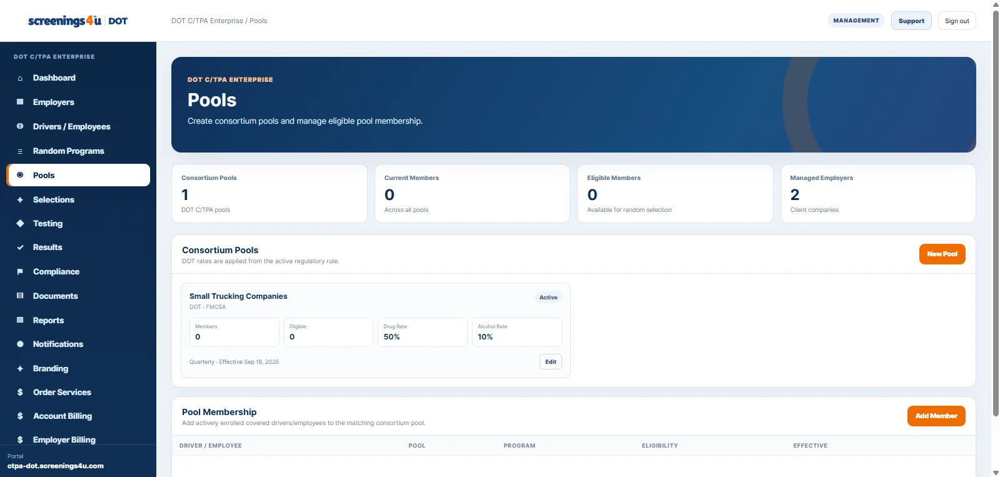

O
One-driver profile
Keep the core driver and program record easy to find and maintain.
A deliberately simpler software experience for one driver, one DOT program, random pool participation, testing, results, documents, reports and compliance history.

Plans start at $45/month.
Keep the core driver and program record easy to find and maintain.
See pool participation and random program activity without enterprise overhead.
Track testing activity and status from one focused workspace.
Keep results connected to the driver and testing history.
Organize supporting records and program documentation in one place.
Review the activity that has built up over time without separate spreadsheets.
The experience emphasizes real dashboards and operational screens so the subscription clearly represents software access, not a monthly drug test.
Explore all platform features →